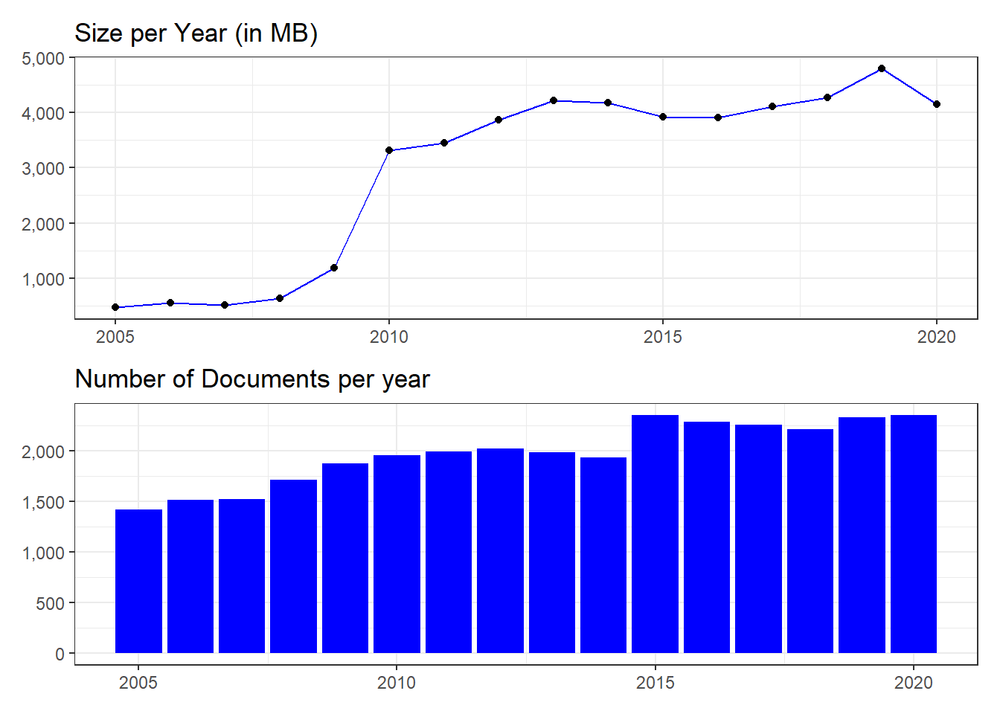

In this session we will retrieve information from the SEC EDGAR database. Getting data from EDGAR is exemplary for getting information from the web, where we have API (Application Programming Interface) access.
Throughout this script we will use custom functions. All the script specific functions are stored in this folder: 1_code/00_functions/f-get_edgar_data.R (As a reference I also put the important functions in the script)
EDGAR is an established source of financial information. But normally companies and researchers start gathering financial information from commercial databases such as Bureau Van Dijk - Orbis, Refinitiv - Datastream or Compustat
Compustat: https://wrds-www.wharton.upenn.edu/
library(tidyverse); library(edgarWebR); library(lubridate); library(here)
library(furrr); library(stringi); library(textstem); library(tidytext)
library(janitor); library(tools); library(patchwork); library(scales)
library(kableExtra); library(openxlsx)
source("1_code/functions/f-all.R")
source("1_code/00_download_data.R")
source("1_code/functions/f-get_edgar_data.R")lst_paths <- list(
dir_main = "2_output/00_get_edgar_data/",
path_filing = "2_output/00_get_edgar_data/edgar_filings.rds",
path_detail = "2_output/00_get_edgar_data/edgar_details.rds",
path_f500 = "2_output/00_get_edgar_data/f500.xlsx"
) %>% create_dirs()To get our initial sample, we use an open source data repository ‘datahub.io’ to retrieve the fortune 500 companies with some financial information. We won’t use the complete data set, but filter for the top 100 companies (using less companies will let the code run faster) with the highest market capitalization. You can change the number of companies by changing the integer vector: .n_companies in the chunk below.
We use a custom function: get_f500() to download the Fortune 500 dataset (click on arrow to show).
get_f500 <- function() {
# Source: https://datahub.io/core/s-and-p-500-companies-financials#r
json_file <- 'https://datahub.io/core/s-and-p-500-companies-financials/datapackage.json'
json_data <- jsonlite::fromJSON(paste(readLines(json_file), collapse=""))
for(i in 1:length(json_data$resources$datahub$type)){
if(json_data$resources$datahub$type[i]=='derived/csv'){
path_to_file = json_data$resources$path[i]
data <- read.csv(url(path_to_file))
}
}
return(data)
}.n_companies <- 100
# browseURL("https://datahub.io/core/s-and-p-500-companies-financials#r")
tab_f500_all <- get_f500() %>%
# Function from the janitor package, makes nice column names
clean_names() %>%
# Arrange, so that the highest market cap appears first in the dataframe
arrange(desc(market_cap))
write.xlsx(tab_f500_all, lst_paths$path_f500, TRUE)
# Select only the firms with the highest market cap
tab_f500_t10 <- slice(tab_f500_all, 1:.n_companies)
# Quick look at the companies we use
select(tab_f500_t10, symbol, name, sector)[1:10, ] %>%
show_table()| symbol | name | sector |
|---|---|---|
| AAPL | Apple Inc. | Information Technology |
| GOOGL | Alphabet Inc Class A | Information Technology |
| GOOG | Alphabet Inc Class C | Information Technology |
| MSFT | Microsoft Corp. | Information Technology |
| AMZN | Amazon.com Inc | Consumer Discretionary |
| FB | Facebook, Inc. | Information Technology |
| JPM | JPMorgan Chase & Co. | Financials |
| JNJ | Johnson & Johnson | Health Care |
| XOM | Exxon Mobil Corp. | Energy |
| BAC | Bank of America Corp | Financials |
Before we download data in bulk, let us first explore the SEC’s EDGAR website:
# browseURL(tab_f500_all$sec_filings[1])The first step is to retrieve the index-links for the fortune 500 companies we selected in the first step. Downloading data from the web is always tricky. We can run into request limits, client or server side issues. So thinking about how to set up a download is crucial in order to make the analysis
We use a custom function: map_company_filings() to retrieve the Index Links from EDGAR (click on arrow to show).
map_company_filings <- function(
.tickers, .ownership = FALSE, .type = "", .before = "",
.count = 100, .page = 1, .progress = TRUE, .sleep = 0, .retry = 5) {
sf <- purrr::safely(edgarWebR::company_filings)
names(.tickers) <- .tickers
pb <- progress::progress_bar$new(total = length(.tickers))
lst <- purrr::map(
.x = .tickers,
.f = ~ {
if (.progress) pb$tick() # Progress bar
Sys.sleep(.sleep) # Optionally, a sleep parameter
check <- sf(.x, .ownership, .type, .before, .count, .page) # store results
# check if we run into an error, and repeat as long until it works
if (!is.null(check$error)) {
for (i in seq_len(.retry)) {
check <- sf(.x, .ownership, .type, .before, .count, .page)
if (is.null(check$error)) {
break
}
}
}
return(check)
}
) %>%
purrr::transpose() %>%
purrr::map(., purrr::compact)
print(paste0("Results: ", scales::comma(length(lst$result))))
print(paste0("Errors: ", scales::comma(length(lst$error))))
return(lst)
}In addition to our custom function, we use a really simple caching procedure so that we don’t have to re-run the whole expression if we already extracted index-links (throughout the session you will see such easy caching, if you use code in production you can also switch to already published libraries auch as R.cache).
if (!file.exists(lst_paths$path_filing)) {
.prc <- tibble(symbol = character(), .rows = 0)
} else {
.prc <- read_rds(lst_paths$path_filing)
}
tab_f500_use <- filter(tab_f500_t10, !symbol %in% .prc$symbol)
if (nrow(tab_f500_use) > 0) {
lst_filings <- map_company_filings(
.tickers = tab_f500_use$symbol, .type = "10-K", .count = 100,
.sleep = .2, .progress = FALSE
)
tab_filings <- bind_rows(.prc, bind_rows(lst_filings$result, .id = "symbol"))
write_rds(tab_filings, lst_paths$path_filing)
} else {
tab_filings <- .prc
}## [1] "Results: 0"
## [1] "Errors: 8"tab_filings <- tab_filings %>%
mutate(id = stri_replace_all_fixed(
basename(href), paste0(".", file_ext(href)), "")
) %>% distinct(id, .keep_all = TRUE)In total we got 8 errors. Let us look at an example error case.
tab_f500_t10 %>%
filter(!symbol %in% read_rds(lst_paths$path_filing)$symbol) %>%
show_table(.n = 5)| symbol | name | sector | price | price_earnings | dividend_yield | earnings_share | x52_week_low | x52_week_high | market_cap | ebitda | price_sales | price_book | sec_filings |
|---|---|---|---|---|---|---|---|---|---|---|---|---|---|
| BRK.B | Berkshire Hathaway | Financials | 191.42 | 30.43 | 0.000000 | 9.76 | 217.62 | 160.93 | 261401203633 | 0 | 1.432823 | 1.58 | http://www.sec.gov/cgi-bin/browse-edgar?action=getcompany&CIK=BRK.B |
| DWDP | DowDuPont | Materials | 68.21 | 49.43 | 2.152975 | 1.59 | 77.08 | 64.01 | 165203312427 | 5250000000 | 2.692239 | 1.54 | http://www.sec.gov/cgi-bin/browse-edgar?action=getcompany&CIK=DWDP |
| UTX | United Technologies | Industrials | 127.48 | 19.26 | 2.121694 | 5.70 | 139.24 | 107.05 | 105387272474 | 10584000000 | 1.732412 | 3.40 | http://www.sec.gov/cgi-bin/browse-edgar?action=getcompany&CIK=UTX |
| PCLN | Priceline.com Inc | Consumer Discretionary | 1806.06 | 24.26 | 0.000000 | 42.66 | 2067.99 | 1589.00 | 91817448863 | 4803487000 | 9.176564 | 6.92 | http://www.sec.gov/cgi-bin/browse-edgar?action=getcompany&CIK=PCLN |
| CELG | Celgene Corp. | Health Care | 91.02 | 13.27 | 0.000000 | 3.58 | 147.17 | 92.85 | 74921079154 | 5233000000 | 5.830071 | 7.49 | http://www.sec.gov/cgi-bin/browse-edgar?action=getcompany&CIK=CELG |
# browseURL("https://www.sec.gov/cgi-bin/browse-edgar?company=BRK.B&match=&filenum=&State=&Country=&SIC=&myowner=exclude&action=getcompany")Let’s quickly look at the result. (There are several ways to do this. For small Dataframes we can simply use the RStudio build-in viewer. Here, we wrote a simple function show_table() that formats the output nicely in HTML format)
show_table(tab_filings, .n = 5)| symbol | accession_number | act | file_number | filing_date | accepted_date | href | type | film_number | form_name | description | size | id |
|---|---|---|---|---|---|---|---|---|---|---|---|---|
| AAPL | NA | 34 | 001-36743 | 2020-10-30 | 2020-10-29 | https://www.sec.gov/Archives/edgar/data/320193/000032019320000096/0000320193-20-000096-index.htm | 10-K | 201273977 | Annual report [Section 13 and 15(d), not S-K Item 405] | NA | 12 MB | 0000320193-20-000096-index |
| AAPL | NA | 34 | 001-36743 | 2019-10-31 | 2019-10-30 | https://www.sec.gov/Archives/edgar/data/320193/000032019319000119/0000320193-19-000119-index.htm | 10-K | 191181423 | Annual report [Section 13 and 15(d), not S-K Item 405] | NA | 12 MB | 0000320193-19-000119-index |
| AAPL | NA | 34 | 001-36743 | 2018-11-05 | 2018-11-05 | https://www.sec.gov/Archives/edgar/data/320193/000032019318000145/0000320193-18-000145-index.htm | 10-K | 181158788 | Annual report [Section 13 and 15(d), not S-K Item 405] | NA | 12 MB | 0000320193-18-000145-index |
| AAPL | NA | 34 | 001-36743 | 2017-11-03 | 2017-11-03 | https://www.sec.gov/Archives/edgar/data/320193/000032019317000070/0000320193-17-000070-index.htm | 10-K | 171174673 | Annual report [Section 13 and 15(d), not S-K Item 405] | NA | 14 MB | 0000320193-17-000070-index |
| AAPL | NA | 34 | 001-36743 | 2016-10-26 | 2016-10-26 | https://www.sec.gov/Archives/edgar/data/320193/000162828016020309/0001628280-16-020309-index.htm | 10-K | 161953070 | Annual report [Section 13 and 15(d), not S-K Item 405] | NA | 13 MB | 0001628280-16-020309-index |
After we got the index links from EDGAR, we proceed by scraping filing details.
We use a custom function: map_filing_details() to retrieve the firm details from EDGAR (click on arrow to show).
download_edgar_files <- function(.tab, .dir, .retry = 5, .sleep = 1) {
if (!dir.exists(.dir)) dir.create(.dir, recursive = TRUE)
files_zip <- list.files(.dir, pattern = "zip$")
tab_ <- .tab %>%
select(year, symbol, document, href, file_ext) %>%
mutate(
file_ext = case_when(
file_ext == "txt" ~ "txt",
startsWith(file_ext, "htm") ~ "htm",
TRUE ~ "xxx"
),
path_downlod = file.path(.dir, document),
path_zip = file.path(.dir, paste0(file_ext, "_", symbol, "-", year, ".zip"))
) %>%
group_by(symbol, year, path_zip) %>%
summarise(across(c(document, href, path_downlod), list), .groups = "drop") %>%
filter(!basename(path_zip) %in% files_zip)
if (nrow(tab_) == 0) return(NULL)
lst_ <- group_split(tab_, symbol, year)
f_try <- function(.url, .path) {
try(download.file(.url, .path, quiet = TRUE, mode = "wb"), silent = TRUE)
}
f_download <- function(.row, .retry) {
urls_ <- unlist(.row$href)
paths_ <- unlist(.row$path_downlod)
lgl_sucess_ <- logical(length(urls_))
for (i in seq_len(length(urls_))) {
check_ <- f_try(urls_[i], paths_[i])
if (inherits(check_, "try-error")) {
for (j in 1:.retry) {
check_ <- f_try(urls_[i], paths_[i])
if (!inherits(check_, "try-error")) break
Sys.sleep(.sleep)
}
}
lgl_sucess_[i] <- ifelse(inherits(check_, "try-error"), FALSE, TRUE)
Sys.sleep(.sleep)
}
.row[["success"]] <- list(lgl_sucess_)
return(.row)
}
f_zip <- function(.row, .dir) {
paths_ <- unlist(.row$path_downlod)
zip_ <- .row$path_zip
files_ <- list.files(.dir)
paths_ <- paths_[basename(paths_) %in% files_]
zip::zipr(zip_, paths_, compression_level = 9)
invisible(file.remove(paths_))
}
f_all <- function(.row, .dir, .retry) {
tab_ <- suppressMessages(suppressWarnings(invisible(f_download(.row, .retry))))
suppressMessages(suppressWarnings(invisible(f_zip(.row, .dir))))
return(tab_)
}
f_all(.row = lst_[[1]], .dir = .dir, .retry)
pb <- progress::progress_bar$new(total = length(lst_))
map_dfr(lst_, ~ {pb$tick(); f_all(.x, .dir, .retry)})
}if (!file.exists(lst_paths$path_detail)) {
.prc <- tibble(id = character(), .rows = 0)
} else {
.prc <- read_rds(lst_paths$path_detail)
}
tab_filings_use <- filter(tab_filings, !id %in% .prc$id)
if (nrow(tab_filings_use) > 0) {
lst_details <- map_filing_details(
.id = tab_filings_use$id, .hrefs = tab_filings_use$href, .sleep = 1
)
lst_details <- transpose(lst_details$result)
lst_details <- map(lst_details, ~ bind_rows(.x, .id = "id"))
tab_details <- reduce(lst_details, left_join, by = "id")
tab_details <- bind_rows(.prc, .tab_details)
write_rds(.tab_details, lst_paths$path_detail)
} else {
tab_details <- .prc
}
rm(tab_filings_use)From the 2,364 index links we retrieved in the last step, we got 89,302 different document links.
It’s important to notice, that such data retrieval tasks often result in very large datasets.
| type | 1993 | 1994 | 1995 | 1996 | 1997 | 1998 | 1999 | 2000 | 2001 | 2002 | 2003 | 2004 | 2005 | 2006 | 2007 | 2008 | 2009 | 2010 | 2011 | 2012 | 2013 | 2014 | 2015 | 2016 | 2017 | 2018 | 2019 | 2020 | 2021 |
|---|---|---|---|---|---|---|---|---|---|---|---|---|---|---|---|---|---|---|---|---|---|---|---|---|---|---|---|---|---|
| 10-K | 780 | 855 | 900 | 938 | 929 | 1020 | 1056 | 1058 | 875 | 2258 | 2629 | 2666 | 2843 | 3037 | 2932 | 3400 | 3855 | 3965 | 4116 | 4117 | 4124 | 4008 | 4863 | 4744 | 4626 | 4586 | 4830 | 4868 | 280 |
| 10-K/A | 124 | 185 | 142 | 106 | 74 | 111 | 92 | 80 | 147 | 232 | 170 | 150 | 140 | 126 | 248 | 174 | 75 | 141 | 44 | 148 | 30 | 53 | 76 | 36 | 116 | 47 | 44 | 36 | 0 |
| 10-K405 | 0 | 347 | 469 | 491 | 696 | 464 | 572 | 611 | 812 | 0 | 0 | 0 | 0 | 0 | 0 | 0 | 0 | 0 | 0 | 0 | 0 | 0 | 0 | 0 | 0 | 0 | 0 | 0 | 0 |
| 10-K405/A | 0 | 28 | 28 | 109 | 149 | 72 | 42 | 97 | 10 | 0 | 0 | 0 | 0 | 0 | 0 | 0 | 0 | 0 | 0 | 0 | 0 | 0 | 0 | 0 | 0 | 0 | 0 | 0 | 0 |
In order to reduce the amount of documents we download, we pre-select specific documents.
tab_download <- tab_details %>%
distinct() %>%
left_join(select(tab_filings, symbol, id), by = "id") %>%
mutate(
file_ext = tools::file_ext(href),
year = year(period_date),
size = size / 1e6,
across(where(is.character), ~ stri_replace_all_regex(., "[[:blank:]]+", " ")),
across(c(type.y, description.y), ~ if_else(. %in% c("", " "), NA_character_, .))
) %>%
select(id, document, state = company_incorporation_state,
sic = sic_code, year, symbol, company_name, company_cik,
type1 = type.x, type2 = type.y, desc = description.y,
period_date, href, size, file_ext) %>%
filter(between(year, 2005, 2020))| type | 2005 | 2006 | 2007 | 2008 | 2009 | 2010 | 2011 | 2012 | 2013 | 2014 | 2015 | 2016 | 2017 | 2018 | 2019 | 2020 |
|---|---|---|---|---|---|---|---|---|---|---|---|---|---|---|---|---|
| 10-K | 1357 | 1455 | 1401 | 1629 | 1844 | 1896 | 1969 | 1950 | 1970 | 1907 | 2326 | 2268 | 2200 | 2193 | 2308 | 2337 |
| 10-K/A | 62 | 63 | 124 | 87 | 31 | 58 | 22 | 74 | 15 | 24 | 28 | 18 | 58 | 22 | 22 | 18 |
As you can see in the plot and the prints below, getting data from the web can result in really big data sets. (Keep in mind that we only downloaded data for 100 companies). The download_edgar_files() function will alleviate this problem by zipping data before writing to disk.
.tmp <- tab_download %>%
group_by(year) %>%
summarise(size = sum(size), n = n(), .groups = "drop")
.geom_size <- .tmp %>%
ggplot(aes(x = year, y = size)) +
geom_line(color = "blue") +
geom_point() +
labs(x = NULL, y = NULL) +
scale_y_continuous(labels = scales::comma) +
theme_bw() +
ggtitle("Size per Year (in MB)")
.geom_n <- .tmp %>%
ggplot(aes(x = year, y = n)) +
geom_col(fill = "blue") +
labs(x = NULL, y = NULL) +
scale_y_continuous(labels = scales::comma) +
theme_bw() +
ggtitle("Number of Documents per year")
.geom_size / .geom_n
tab_download_txt <- tab_download %>%
filter(file_ext == "txt", desc == "Complete submission text file") %>%
arrange(symbol, desc(year), desc(period_date)) %>%
distinct(symbol, year, .keep_all = TRUE) %>%
distinct(document, .keep_all = TRUE)
cat(paste0(
"Docs: ", comma(nrow(tab_download_txt)), "\n",
"Size: ", comma(sum(tab_download_txt$size)), " MB")
)## Docs: 1,327
## Size: 28,347 MBtab_download_htm <- tab_download %>%
filter(startsWith(file_ext, "htm"), grepl("10-K", desc)) %>%
arrange(symbol, desc(year), desc(period_date)) %>%
distinct(symbol, year, .keep_all = TRUE) %>%
distinct(document, .keep_all = TRUE)
cat(paste0(
"Docs: ", comma(nrow(tab_download_htm)), "\n",
"Size: ", comma(sum(tab_download_htm$size)), " MB")
)## Docs: 967
## Size: 3,728 MBtab_download_xxx <- tab_download %>%
filter(startsWith(file_ext, "x")) %>%
arrange(symbol, desc(year), desc(period_date)) %>%
distinct(document, .keep_all = TRUE)
cat(paste0(
"Docs: ", comma(nrow(tab_download_xxx)), "\n",
"Size: ", comma(sum(tab_download_xxx$size)), " MB")
)## Docs: 6,049
## Size: 9,511 MBWe use a custom function: download_edgar_files() to download documents from EDGAR (click on arrow to show).
download_edgar_files <- function(.tab, .dir, .retry = 5, .sleep = 1) {
if (!dir.exists(.dir)) dir.create(.dir, recursive = TRUE)
files_zip <- list.files(.dir, pattern = "zip$")
tab_ <- .tab %>%
select(year, symbol, document, href, file_ext) %>%
mutate(
file_ext = case_when(
file_ext == "txt" ~ "txt",
startsWith(file_ext, "htm") ~ "htm",
TRUE ~ "xxx"
),
path_downlod = file.path(.dir, document),
path_zip = file.path(.dir, paste0(file_ext, "_", symbol, "-", year, ".zip"))
) %>%
group_by(symbol, year, path_zip) %>%
summarise(across(c(document, href, path_downlod), list), .groups = "drop") %>%
filter(!basename(path_zip) %in% files_zip)
if (nrow(tab_) == 0) return(NULL)
lst_ <- group_split(tab_, symbol, year)
f_try <- function(.url, .path) {
try(download.file(.url, .path, quiet = TRUE, mode = "wb"), silent = TRUE)
}
f_download <- function(.row, .retry) {
urls_ <- unlist(.row$href)
paths_ <- unlist(.row$path_downlod)
lgl_sucess_ <- logical(length(urls_))
for (i in seq_len(length(urls_))) {
check_ <- f_try(urls_[i], paths_[i])
if (inherits(check_, "try-error")) {
for (j in 1:.retry) {
check_ <- f_try(urls_[i], paths_[i])
if (!inherits(check_, "try-error")) break
Sys.sleep(.sleep)
}
}
lgl_sucess_[i] <- ifelse(inherits(check_, "try-error"), FALSE, TRUE)
Sys.sleep(.sleep)
}
.row[["success"]] <- list(lgl_sucess_)
return(.row)
}
f_zip <- function(.row, .dir) {
paths_ <- unlist(.row$path_downlod)
zip_ <- .row$path_zip
files_ <- list.files(.dir)
paths_ <- paths_[basename(paths_) %in% files_]
zip::zipr(zip_, paths_, compression_level = 9)
invisible(file.remove(paths_))
}
f_all <- function(.row, .dir, .retry) {
tab_ <- suppressMessages(suppressWarnings(invisible(f_download(.row, .retry))))
suppressMessages(suppressWarnings(invisible(f_zip(.row, .dir))))
return(tab_)
}
f_all(.row = lst_[[1]], .dir = .dir, .retry)
pb <- progress::progress_bar$new(total = length(lst_))
map_dfr(lst_, ~ {pb$tick(); f_all(.x, .dir, .retry)})
}.dir_docs <- "2_output/00_get_edgar_data/documents/"
tab_xxx <- download_edgar_files(tab_download_xxx, .dir_docs, 10, 2)
tab_htm <- download_edgar_files(tab_download_htm, .dir_docs, 10, 2)
tab_txt <- download_edgar_files(tab_download_txt, .dir_docs, 10, 2)
tab_zip_files <- list_files_tab(.dir_docs, info = TRUE) %>%
select(doc_id, file_ext, path, size) %>%
mutate(size = size / 1e6)Below you can see that we were able to reduce the dataset from more than 40 GB to just 3.7 GB by simply zipping the output.
cat(paste0(
"Docs: ", comma(nrow(tab_zip_files)), "\n",
"Size: ", comma(sum(tab_zip_files$size)), " MB")
)## Docs: 3,298
## Size: 3,768 MBwrite_rds(tab_download_htm, "2_output/00_get_edgar_data/htm_download.rds")
write_rds(tab_download_txt, "2_output/00_get_edgar_data/txt_download.rds")
write_rds(tab_download_xxx, "2_output/00_get_edgar_data/xxx_download.rds")lsf.str()## create_dirs : function (.dirs)
## downlad_ar : function (.url, .dir)
## download_edgar_files : function (.tab, .dir, .retry = 5, .sleep = 1)
## download_google_drive : function (.id, .dir = NULL, .read_fun = NULL, .overwrite = FALSE)
## fnc_fix_cost : function (.cf, .v, .vm)
## fnc_fix_mult : function (.v, .vm)
## fnc_fix_unit : function (.cf, .v, .vm)
## fnc_rev : function (.p, .v)
## fnc_rev_sigmoid : function (.v)
## fnc_rev_unit : function (.p, .v)
## fnc_var_cost : function (.cv, .v, .vb, .vc, .vd, .d)
## fnc_var_disc : function (.v, .vb, .vc, .vd, .d)
## fnc_var_unit : function (.cv, .v, .vb, .vc, .vd, .d)
## get_amortization : function (.tab, .years, .invest, .discount)
## get_cm_table : function (.tab)
## get_company_table : function (.url)
## get_f500 : function ()
## get_infos : function (.path)
## get_input_table : function (.v = 0, .p = 0, .cv = 0, .cf = 0, .vb = 0,
## .vc = 0, .vd = 0, .d = 0, .vm = 0, .ca = 0)
## get_profit : function (.tab)
## list_files_tab : function (dirs, reg = "*", id = "doc_id", rec = FALSE,
## info = FALSE)
## map_company_filings : function (.tickers, .ownership = FALSE, .type = "",
## .before = "", .count = 100, .page = 1, .progress = TRUE,
## .sleep = 0, .retry = 5)
## map_filing_details : function (.id, .hrefs, .progress = TRUE, .sleep = 0,
## .retry = 5)
## plot_amortization : function (.tab, .size)
## plot_monte_carlo : function (.tab, .size)
## plot_points : function (.tab, .x, .y, .xlab = "", .ylab = "",
## .title = "", .size)
## plot_profits : function (.tab, .x, .y, .xlab = "", .ylab = "",
## .title = "", .size = 16)
## remove_html_tags : function (.string, rm_linebreaks = TRUE)
## safe_get_company_table : function (...)
## show_table : function (.tab, .n = Inf)
## standardize_name : function (.name)sessioninfo::session_info()## - Session info ----------------------------------------
## setting value
## version R version 4.1.2 (2021-11-01)
## os Windows 10 x64 (build 22000)
## system x86_64, mingw32
## ui RStudio
## language (EN)
## collate English_Germany.1252
## ctype English_Germany.1252
## tz Europe/Berlin
## date 2022-05-28
## rstudio 2022.02.2+485 Prairie Trillium (desktop)
## pandoc 2.17.1.1 @ C:/Program Files/RStudio/bin/quarto/bin/ (via rmarkdown)
##
## - Packages --------------------------------------------
## package * version date (UTC) lib source
## assertthat 0.2.1 2019-03-21 [1] CRAN (R 4.1.0)
## backports 1.4.1 2021-12-13 [1] CRAN (R 4.1.2)
## broom 0.7.12 2022-01-28 [1] CRAN (R 4.1.2)
## bslib 0.3.1 2021-10-06 [1] CRAN (R 4.1.1)
## cellranger 1.1.0 2016-07-27 [1] CRAN (R 4.1.0)
## cli 3.2.0 2022-02-14 [1] CRAN (R 4.1.2)
## codetools 0.2-18 2020-11-04 [2] CRAN (R 4.1.2)
## colorspace 2.0-2 2021-06-24 [1] CRAN (R 4.1.1)
## crayon 1.5.0 2022-02-14 [1] CRAN (R 4.1.2)
## curl 4.3.2 2021-06-23 [1] CRAN (R 4.1.0)
## data.table 1.14.2 2021-09-27 [1] CRAN (R 4.1.1)
## DBI 1.1.2 2021-12-20 [1] CRAN (R 4.1.2)
## dbplyr 2.1.1 2021-04-06 [1] CRAN (R 4.1.0)
## digest 0.6.29 2021-12-01 [1] CRAN (R 4.1.2)
## dplyr * 1.0.8 2022-02-08 [1] CRAN (R 4.1.2)
## edgarWebR * 1.1.0 2021-04-24 [1] CRAN (R 4.1.0)
## ellipsis 0.3.2 2021-04-29 [1] CRAN (R 4.1.0)
## evaluate 0.14 2019-05-28 [1] CRAN (R 4.1.0)
## fansi 1.0.2 2022-01-14 [1] CRAN (R 4.1.2)
## farver 2.1.0 2021-02-28 [1] CRAN (R 4.1.0)
## fastmap 1.1.0 2021-01-25 [1] CRAN (R 4.1.0)
## forcats * 0.5.1 2021-01-27 [1] CRAN (R 4.1.0)
## fs 1.5.2 2021-12-08 [1] CRAN (R 4.1.2)
## fst * 0.9.8 2022-02-08 [1] CRAN (R 4.1.2)
## fstcore * 0.9.8 2022-02-04 [1] CRAN (R 4.1.2)
## furrr * 0.2.3 2021-06-25 [1] CRAN (R 4.1.0)
## future * 1.23.0 2021-10-31 [1] CRAN (R 4.1.1)
## fuzzyjoin * 0.1.6 2020-05-15 [1] CRAN (R 4.1.0)
## generics 0.1.2 2022-01-31 [1] CRAN (R 4.1.2)
## ggplot2 * 3.3.5 2021-06-25 [1] CRAN (R 4.1.0)
## ggthemes * 4.2.4 2021-01-20 [1] CRAN (R 4.1.2)
## globals 0.14.0 2020-11-22 [1] CRAN (R 4.1.0)
## glue 1.6.2 2022-02-24 [1] CRAN (R 4.1.2)
## gtable 0.3.0 2019-03-25 [1] CRAN (R 4.1.0)
## haven 2.4.3 2021-08-04 [1] CRAN (R 4.1.1)
## here * 1.0.1 2020-12-13 [1] CRAN (R 4.1.0)
## highr 0.9 2021-04-16 [1] CRAN (R 4.1.0)
## hms 1.1.1 2021-09-26 [1] CRAN (R 4.1.1)
## htmltools 0.5.2 2021-08-25 [1] CRAN (R 4.1.1)
## htmlwidgets * 1.5.4 2021-09-08 [1] CRAN (R 4.1.3)
## httr 1.4.2 2020-07-20 [1] CRAN (R 4.1.0)
## ISOcodes * 2022.01.10 2022-01-10 [1] CRAN (R 4.1.2)
## janeaustenr 0.1.5 2017-06-10 [1] CRAN (R 4.1.0)
## janitor * 2.1.0 2021-01-05 [1] CRAN (R 4.1.0)
## jquerylib 0.1.4 2021-04-26 [1] CRAN (R 4.1.0)
## jsonlite 1.7.3 2022-01-17 [1] CRAN (R 4.1.2)
## kableExtra * 1.3.4 2021-02-20 [1] CRAN (R 4.1.0)
## knitr 1.37 2021-12-16 [1] CRAN (R 4.1.2)
## koRpus * 0.13-8 2021-05-17 [1] CRAN (R 4.1.3)
## koRpus.lang.en * 0.1-4 2020-10-24 [1] CRAN (R 4.1.3)
## labeling 0.4.2 2020-10-20 [1] CRAN (R 4.1.0)
## lattice 0.20-45 2021-09-22 [2] CRAN (R 4.1.2)
## lazyeval 0.2.2 2019-03-15 [1] CRAN (R 4.1.0)
## lifecycle 1.0.1 2021-09-24 [1] CRAN (R 4.1.1)
## listenv 0.8.0 2019-12-05 [1] CRAN (R 4.1.0)
## lubridate * 1.8.0 2021-10-07 [1] CRAN (R 4.1.1)
## magrittr 2.0.2 2022-01-26 [1] CRAN (R 4.1.2)
## Matrix 1.4-0 2021-12-08 [1] CRAN (R 4.1.2)
## modelr 0.1.8 2020-05-19 [1] CRAN (R 4.1.0)
## modeltools 0.2-23 2020-03-05 [1] CRAN (R 4.1.1)
## munsell 0.5.0 2018-06-12 [1] CRAN (R 4.1.0)
## NLP 0.2-1 2020-10-14 [1] CRAN (R 4.1.0)
## openxlsx * 4.2.5 2021-12-14 [1] CRAN (R 4.1.2)
## parallelly 1.30.0 2021-12-17 [1] CRAN (R 4.1.2)
## patchwork * 1.1.1 2020-12-17 [1] CRAN (R 4.1.0)
## pillar 1.7.0 2022-02-01 [1] CRAN (R 4.1.2)
## pkgconfig 2.0.3 2019-09-22 [1] CRAN (R 4.1.0)
## plotly * 4.10.0 2021-10-09 [1] CRAN (R 4.1.3)
## plyr 1.8.6 2020-03-03 [1] CRAN (R 4.1.0)
## prettyunits 1.1.1 2020-01-24 [1] CRAN (R 4.1.0)
## progress 1.2.2 2019-05-16 [1] CRAN (R 4.1.0)
## purrr * 0.3.4 2020-04-17 [1] CRAN (R 4.1.0)
## R6 2.5.1 2021-08-19 [1] CRAN (R 4.1.1)
## Rcpp 1.0.8 2022-01-13 [1] CRAN (R 4.1.2)
## readr * 2.1.2 2022-01-30 [1] CRAN (R 4.1.2)
## readtext * 0.81 2021-07-14 [1] CRAN (R 4.1.0)
## readxl 1.3.1 2019-03-13 [1] CRAN (R 4.1.0)
## reprex 2.0.1 2021-08-05 [1] CRAN (R 4.1.1)
## reshape2 1.4.4 2020-04-09 [1] CRAN (R 4.1.0)
## rlang 1.0.1 2022-02-03 [1] CRAN (R 4.1.2)
## rmarkdown 2.11 2021-09-14 [1] CRAN (R 4.1.1)
## rprojroot 2.0.2 2020-11-15 [1] CRAN (R 4.1.0)
## rstudioapi 0.13 2020-11-12 [1] CRAN (R 4.1.0)
## rvest * 1.0.2 2021-10-16 [1] CRAN (R 4.1.1)
## sass 0.4.0 2021-05-12 [1] CRAN (R 4.1.0)
## scales * 1.1.1 2020-05-11 [1] CRAN (R 4.1.0)
## sessioninfo 1.2.2 2021-12-06 [1] CRAN (R 4.1.2)
## slam 0.1-50 2022-01-08 [1] CRAN (R 4.1.2)
## snakecase 0.11.0 2019-05-25 [1] CRAN (R 4.1.0)
## SnowballC 0.7.0 2020-04-01 [1] CRAN (R 4.1.0)
## stringdist * 0.9.8 2021-09-09 [1] CRAN (R 4.1.1)
## stringi * 1.7.6 2021-11-29 [1] CRAN (R 4.1.2)
## stringr * 1.4.0 2019-02-10 [1] CRAN (R 4.1.0)
## svglite 2.1.0 2022-02-03 [1] CRAN (R 4.1.2)
## sylly * 0.1-6 2020-09-20 [1] CRAN (R 4.1.3)
## sylly.en 0.1-3 2018-03-19 [1] CRAN (R 4.1.3)
## systemfonts 1.0.4 2022-02-11 [1] CRAN (R 4.1.2)
## textstem * 0.1.4 2018-04-09 [1] CRAN (R 4.1.3)
## tibble * 3.1.6 2021-11-07 [1] CRAN (R 4.1.2)
## tidyr * 1.2.0 2022-02-01 [1] CRAN (R 4.1.2)
## tidyselect 1.1.1 2021-04-30 [1] CRAN (R 4.1.0)
## tidytext * 0.3.2 2021-09-30 [1] CRAN (R 4.1.1)
## tidyverse * 1.3.1 2021-04-15 [1] CRAN (R 4.1.0)
## tm 0.7-8 2020-11-18 [1] CRAN (R 4.1.0)
## tokenizers 0.2.1 2018-03-29 [1] CRAN (R 4.1.0)
## topicmodels * 0.2-12 2021-01-29 [1] CRAN (R 4.1.3)
## tzdb 0.2.0 2021-10-27 [1] CRAN (R 4.1.1)
## utf8 1.2.2 2021-07-24 [1] CRAN (R 4.1.1)
## vctrs 0.3.8 2021-04-29 [1] CRAN (R 4.1.0)
## viridisLite 0.4.0 2021-04-13 [1] CRAN (R 4.1.0)
## webshot 0.5.2 2019-11-22 [1] CRAN (R 4.1.0)
## withr 2.4.3 2021-11-30 [1] CRAN (R 4.1.2)
## XBRL 0.99.19 2021-10-18 [1] CRAN (R 4.1.1)
## xfun 0.29 2021-12-14 [1] CRAN (R 4.1.2)
## xml2 * 1.3.3 2021-11-30 [1] CRAN (R 4.1.2)
## yaml 2.2.2 2022-01-25 [1] CRAN (R 4.1.2)
## zip * 2.2.0 2021-05-31 [1] CRAN (R 4.1.0)
##
## [1] E:/R/R_library
## [2] C:/Program Files/R/R-4.1.2/library
##
## -------------------------------------------------------